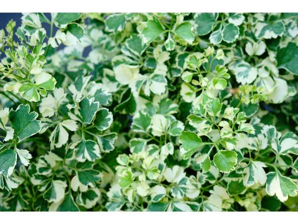

Polyscias guilfoylei
Common Names: Geranium Aralia, Wild Coffee, Geranium-leaf Aralia
Local Name: Geranium Aralia (Tamil/Hindi)
Family: Araliaceae
Origin: Polynesia and Pacific Islands
Plant Type: Evergreen tropical shrub or small tree
Average Lifespan: 10–20 years
| Growth Habit | Upright, multi-stemmed shrub with open branching |
| Plant Size | 1–5 meters tall; can be kept smaller with pruning |
| Leaves | Pinnate, deeply lobed leaflets with serrated margins; aromatic when crushed; green with white or cream margins in variegated forms |
| Flowers | Small, greenish-white, borne in large panicles; inconspicuous |
| Root System | Fibrous, moderately deep; well-anchored |
| Climate | Tropical and subtropical; warm and humid |
| Temperature Range | 18–35°C; frost-sensitive |
| Soil Type | Well-drained, fertile loamy soil |
| Soil pH Preference | 5.5–7.0 |
| Sun Requirement | Full sun to partial shade; tolerates low light indoors |
| Water Requirement | Moderate; allow soil to dry slightly between waterings |
| Can it Grow in Pots? | Yes, excellent indoor and patio container plant |
| Fertilizer Schedule | Monthly during growing season |
| Recommended Organic Fertilizers | Compost, worm castings, neem cake |
| Common Pests | Spider mites, mealybugs, scale insects |
| Common Diseases | Root rot (overwatering), leaf spot |
| Pruning Time | Spring; prune to shape and control size |
| How to Prune | Cut back to desired shape; tolerates hard pruning; use as formal hedge |
| Propagation by Cuttings | Stem cuttings root easily in moist soil with rooting hormone; 3–4 weeks |
| Market Uses | Hedge plant, indoor ornamental, landscape shrub, topiary |
| Market Value (Approx.) | ₹100–400 per plant in Indian nurseries |
Add your field observations here.